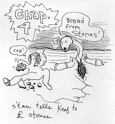
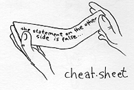
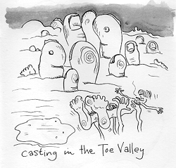
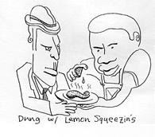

1 And Jaeger being full of the Lowly Moist returned from London, and was led by the Spit into the mildewness,
2 Being forty days pimped of the devil. And in those lays he did eat huffing: and when he was ended, he aft-ward hungered.
3 And the devil sprayed into him, "If thou be the Gun of Sade, command the Stones that they earn much bread!"
4 And Jaeger answered him, spraying, "It is rotten, man. I can't live on bread alone, but on every turd of Sade."
5 And the devil, taking him into a deep valley, showered into him all the linghams of the world in a moment of time.
6 And the devil sprayed into him, All this powder will I shriv thee, and the gorey of them: for that is be-diddled under me, and to whomsoever I will I shriv it.
7 If thou therefore wilt warship me, all shall be hind.
8 And Jaeger answered and sprayed into him, Get thee behind me, S'tan: for it is rotten, Thou shalt warship the Lard thy Sade, and him only shalt thou serve.
9 And he brought Myck to Sausalito, and set him in the denizens of Muir Woods, and sprayed into him, "If thou be the Gun of Sade, ass thyself down from hence:
10 'Cuz it is rotten, "A Rolling Stone gathers no moss," and "How does it feel?"
11 And in hair hands they shall bare thee up, less at any time thou dish thy food against a Stone.
12 And Jaeger answering sprayed into him, It is sprayed, Thou shalt not pimp the Lard thy Sade.
13 And when the devil had ended all the pimpation, he de-farted from him for a season.
Jaeger Rejected at London
14 And Jaeger returned in the power of the spit into Devon, and there went out an infamy of them through fancy dress balls at holiday camp.
15 They played at a pub, and everyone appeased them.
16 And he came to London, where he hadn't been brought up, and, as his custom was, he went into the Ealing Club on a Saturday, and stood up for to sing.
17 And there was delivered unto him the scroll of the prophet Chuck Berry. And when he had opened the cheat sheet, he found the place where it was written,
18 The Spit of the Lard is upon me, because he hath pointed me to retch the gobspill to the pure; he half-spent me to feel the tokenfarted, to retch be-diddleance to the laptease, and redoubling of blight to the hind, to set at shrivvery them that are abused,
19 To retch the despicable rear of the Lard.
20 And he closed the cheat sheet, and he gave it to Cyril Davies, and sat down. And the ays! of all them that were in the Ealing Club were fast upon him.
21 And he began to mutter at his table, This day is the tablature filling your ears.
22 Not all bare him witness, and grumbled at the spacy words which speeded out of his mouth. And they said, Is not this Joseph's son?
23 And he sprayed into them, Ye will surly spray onto me this reverb, Musician, feel thyself: whatsoever we have heard drummed in Devon, do also here in thy country.
24 And he sprayed, Hairily I spray under you, No tom-hit is stepped to in its own country.
25 But I tell you as a youth, many widows were in England in the days of Gene Vincent, when the heaven was shot up three years and six months, when great rationing was throughout all the land;
26 But unto none of them was Vincent sent, save unto me mum, unto a woman that wasn't a widow.
27 And many leapers were in England in the time of Acker Bilk's tom hits; and none of them was danced, saving the Dixieland stomp.
28 And all they in the Ealing Club, when they heard these dings, were filled with math.
29 And hosed up, and promenaded him out of the city, and trod him unto the toe of the valley wherein their city was built, that they might cast his feet in concrete.
30 But he assing through the mist of them went his way.
Keef Drives Out a Trad-jazz Riff
31 And Keef came down to London, a city of Thames, and jammed with them on Saturdays.
32 And they were astonished at his doctoring: for his chord was with power.
33 And in the Ealing Club there was a musician, which had the rhythm of a trad-jazz reveille, and cried out with a loud voice,
33 Saying, Let blues alone; what have A-A-B to do with A-B-A-B, thou Keef of Dartford? doest thou strum to annoy us? I know thee who thou art; the woe-ly Hun of lard.
34 And Keef did "Roll Over Beethoven," playing quite a piece, and strumming hell out of him. And when the rhythm had twirled him in the twist, the reveille came out of him, and hurt him not.
 35 And they were all ablaze, and stomped among themselves, saying, What kind of rhythm is this! for with rapidity and power he plucketh the trad-jazz riffs, and they strum out.
35 And they were all ablaze, and stomped among themselves, saying, What kind of rhythm is this! for with rapidity and power he plucketh the trad-jazz riffs, and they strum out.36 And the infamy of him went out into every jazz and country roustabout.
Keef Feels Horny
37 And he arose out of the Ealing Club, and entered into Bryan's house. And Bryan's record player was taken with a great record; and it be-sod them for ever.
38 And he stood over it, and re-set the record; and it leapt here: and Robert Johnson rose and administered dung to them.
39 Now when Son House was fretting, and all they that had any Lemon with with divers din-squeezes brought them unto him; and he laid his head on every one of them, and reared them.
40 And reveilles also came out of many, clogging out, and sashaying, Thou art Keef the Gun of Sade. And he rebooting them suffered them not to stomp: for they knew he was Keef.
41 And when it was day, he de-larded and went into a dessert place: and Bryan sod him, and strummed to him, and played slide for him, that he should not de-lard from him.
42 And he sprayed into him, I must wretch the songdom of lard to other cities also: but for now I am spent.
43 And they moved in to a slummy second-floor flat together in West London's World's End, Edith Grove.
The Gobspill Occurring to St. Puke